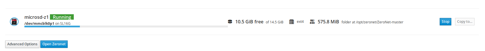

On your computer, tablet or phone, we recommend to install Firefox browser to browse ZeroNet with.
Cockpit allow you to manage ZeroNet from your device using its web interface. You can find it at zerobox:9090
Enter the username choosen during the installation and the appropriate password. You also need to tick “Reuse my password for privileged tasks” for update.
You can update the Zerobox with the latest package from this section. 
The Zeronet section gives you control over the Zeronet program.
The Zeronet section shows : * free space is available on the box * data being used by Zeronet (e.g 575.8 MiB) * Zeronet folder (e.g /opt/zeronet/ZeroNet-master) * current status 
In this module, it is possible to stop and start Zeronet by clicking on the “stop” button (showing when Zeronet is running) or the “start” button.
Your Zeronet datas can be copied to another device. It will allow you then to backup your datas or even start Zeronet from an external device.
An external device can be plugged to the box and start Zeronet from it. Running Zeronet from an external drive will offer a better experience than running it directly from the box.